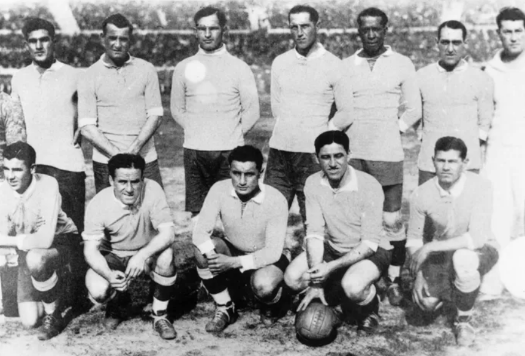

Copa do Mundo
Aluno: Julio Marturano Pereira
A Copa do Mundo de Futebol é o principal torneio de futebol entre seleções nacionais masculinas. Organizada pela FIFA, a competição ocorre a cada quatro anos desde 1930.
A primeira Copa do Mundo foi realizada no Uruguai, e o país anfitrião sagrou-se campeão. Ao longo das décadas, a Copa se tornou o evento esportivo mais assistido do mundo, reunindo milhões de torcedores em cada edição.
O Brasil é o país com o maior número de títulos, tendo conquistado a taça cinco vezes. A Copa do Mundo é muito mais do que um simples torneio esportivo, representando um momento de união entre os povos e celebrando a paixão pelo futebol.